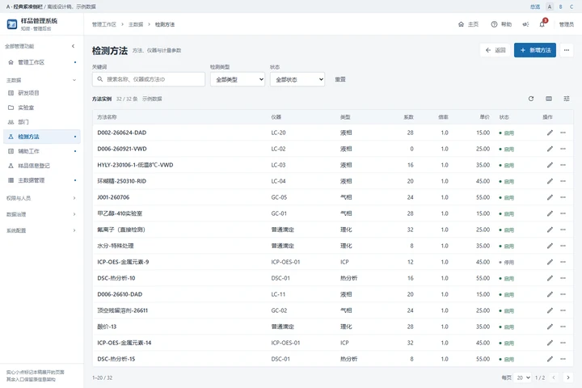
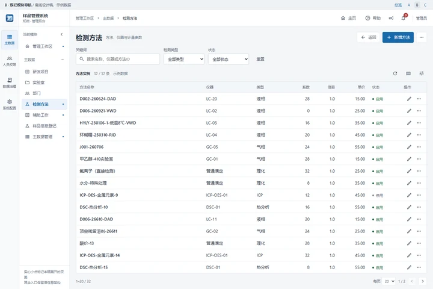
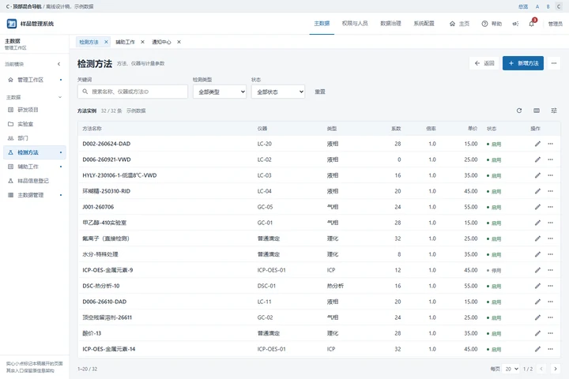

A · 经典紧凑侧栏

保留熟悉的侧栏，四组菜单可收起。业务操作、筛选条件与表格设置分层，手机整合成一个导航入口。
- 侧栏
- 208px，分组折叠
- 适合
- 希望少改结构、快速降低拥挤感
- 代价
- 全部展开后仍需滚动菜单
参考 Art Design Pro 的导航、搜索区与表格工具组织，重新检查当前后台。三版使用相同的示例数据与交互，重点比较菜单层级、操作位置、数据宽度和手机首屏。

保留熟悉的侧栏，四组菜单可收起。业务操作、筛选条件与表格设置分层，手机整合成一个导航入口。

四个模块常驻，具体功能只显示当前模块。将23个入口拆成清晰的两级，内容区宽度与现有232px侧栏接近。

四个模块移到顶部，左侧菜单更窄；演示工作标签，便于在方法、辅助事项和通知之间切换。
v2.4.8 已统一管理外壳并改善角色手机页；仍需继续整理工具区、数据区和导航的关系。侧栏从232px改成230px的收益有限，层级和占高更值得处理。
| 观察 | 当前表现 | 参考稿如何处理 |
|---|---|---|
| 导航重复 | 手机全局菜单、管理导航、当前栏目和主标题上下叠加；总览又完整重复侧栏 | 单一手机导航；桌面按模块分层；总览做横向分组索引 |
| 工具栏混合 | 搜索、筛选、方法一览、仪器、导入、新建在同一区域；次要按钮在手机强制整行 | 新增放页头；筛选靠近数据；低频管理进入明确的更多菜单 |
| 行内按钮抬高计数行 | “管理类型”位于计数文字中，仍继承36/44px最低按钮高度 | 计数只保留元数据；管理命令与计数分离 |
| 主数据层级多 | 管理侧栏、操作页签、152px工作表目录同时占位；各列按相近宽度展开 | 数据对象选择器；预览/导入/导出分开；名称、数值和操作各有宽度策略 |
| 滚动关系复杂 | 外壳固定扣104px，表格再设最大高度和手机视口补偿 | 明确外壳网格和一个主要数据滚动区；配置页按内容滚动 |
| 通知页面较长 | 先经过身份、模板、统计、渠道、规则，再看到事件和发送记录 | 把运行查询与低频配置分成任务页签，保留全部原功能 |
| 视觉优先级不够一致 | 主题按钮、固定蓝/青色与较亮的元数据标签并存 | 主操作只用一种强调色；状态色保留语义，已配置颜色不被覆盖 |
涉及 ManageWorkspace.tsx、ManageNav.tsx、ManagePage.tsx、MasterDataPanel.tsx、NotificationPage.tsx 与字段配置组件。高度耦合属于结构风险，不等于已经复现卡死。
基线使用正式编译前端配虚构API夹具；参考稿额外带32px方案说明栏。以下只比较首条方法名称的位置，不作为查询性能或一屏记录数量的提升统计。
| 视口与页面 | 当前 v2.4.8 | A / B | C |
|---|---|---|---|
| 1440×960 方法配置 | y=308 | y=318（去说明栏约286） | y=354（去说明栏约322） |
| 1440×960 主数据预览 | y=376 | y=318 | y=354 |
| 390×844 方法配置 | y=615 | y=263 | y=263 |
| 390×844 主数据预览 | y=571 | y=263 | y=263 |
本次核验官方开源主线 f3aaf58e；发布页Latest返回v3.0.2。默认左侧菜单、230px宽度与工作标签设置均以开源配置为准，不把商业版文档默认值当成同一个版本。
三版最终通过303项离线浏览器检查，覆盖六种视口，未发生脚本错误或外部HTTP请求。仅为设计参考，没有修改正式页面、后端、权限、数据库、版本或发布。